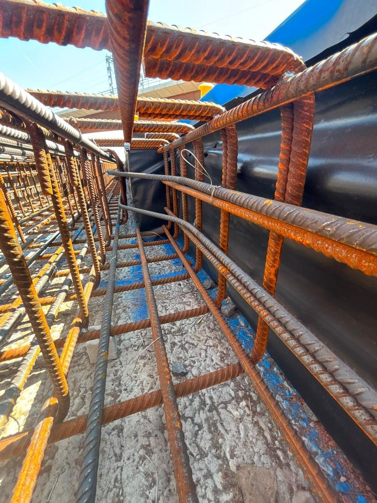
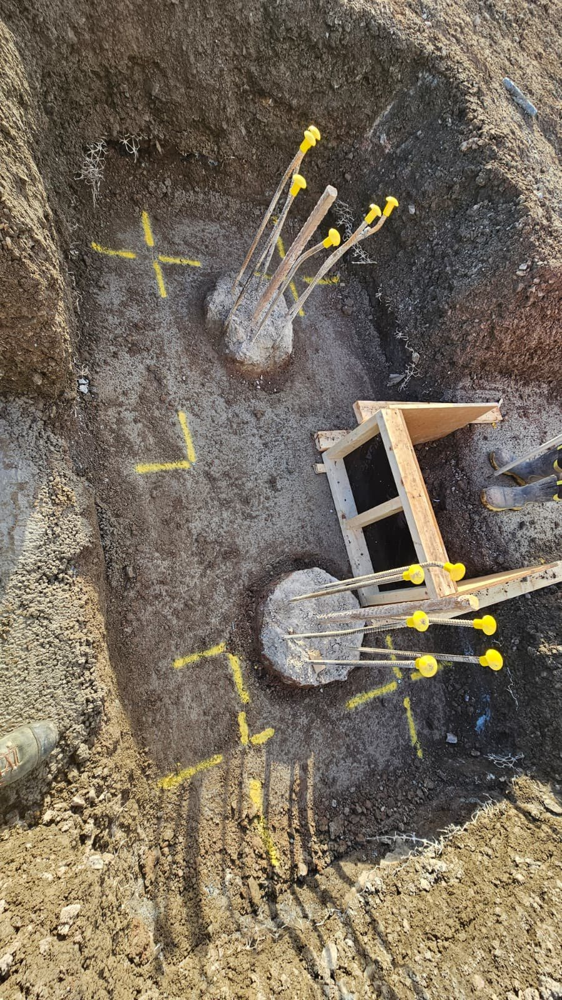
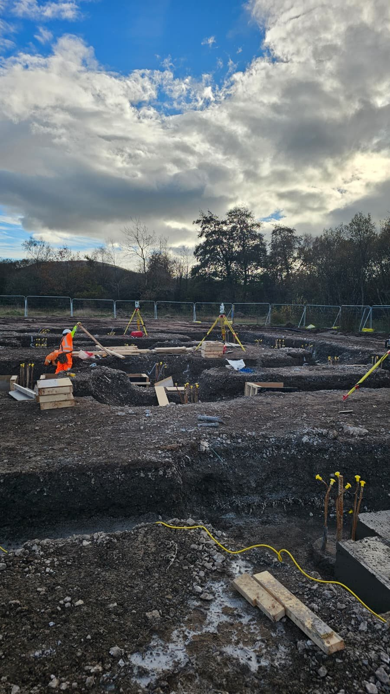
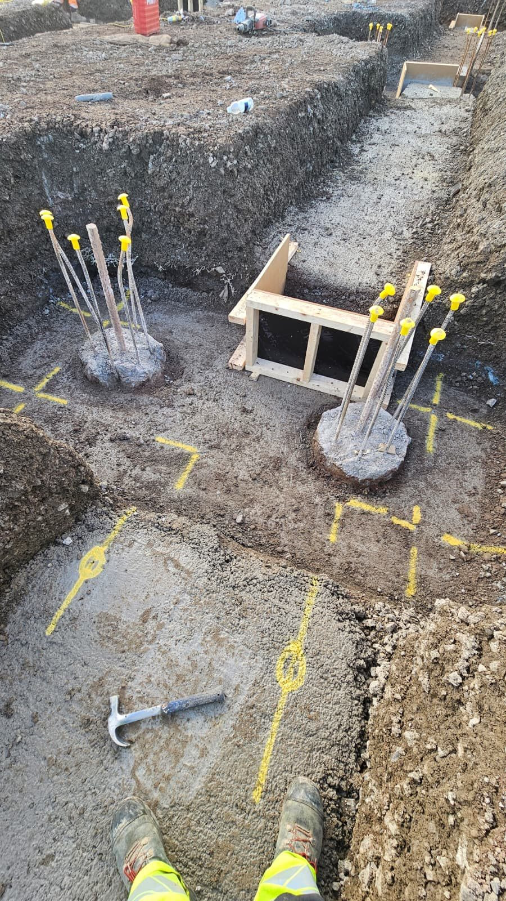
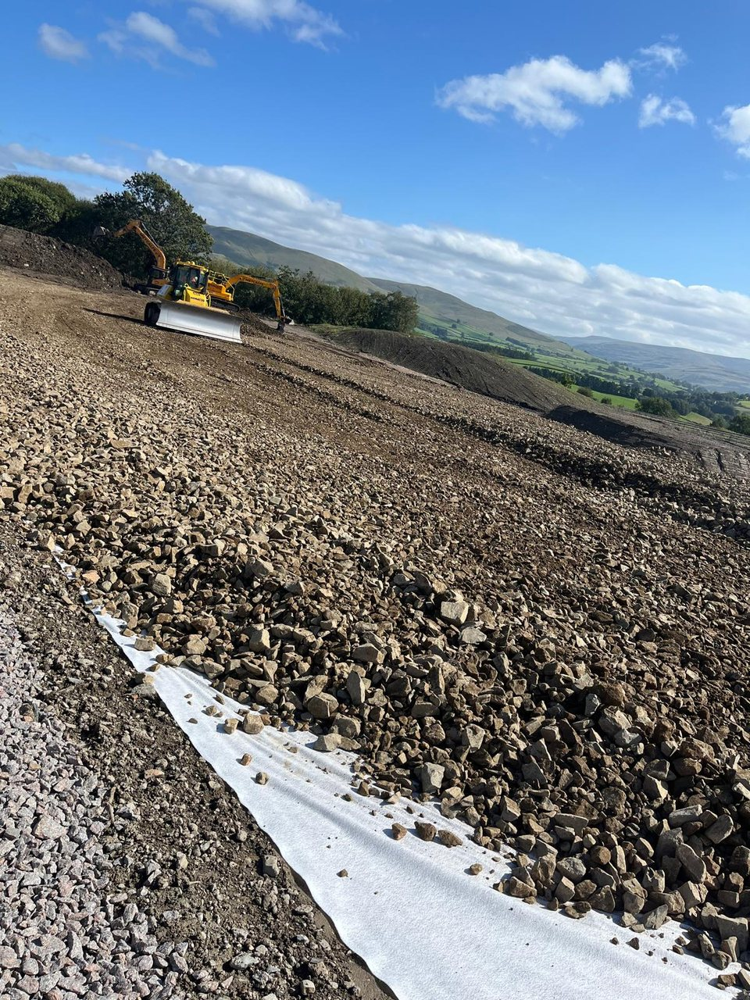
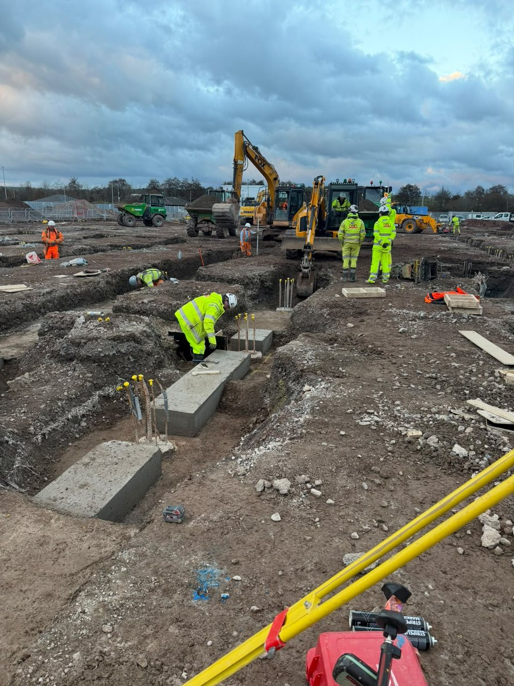
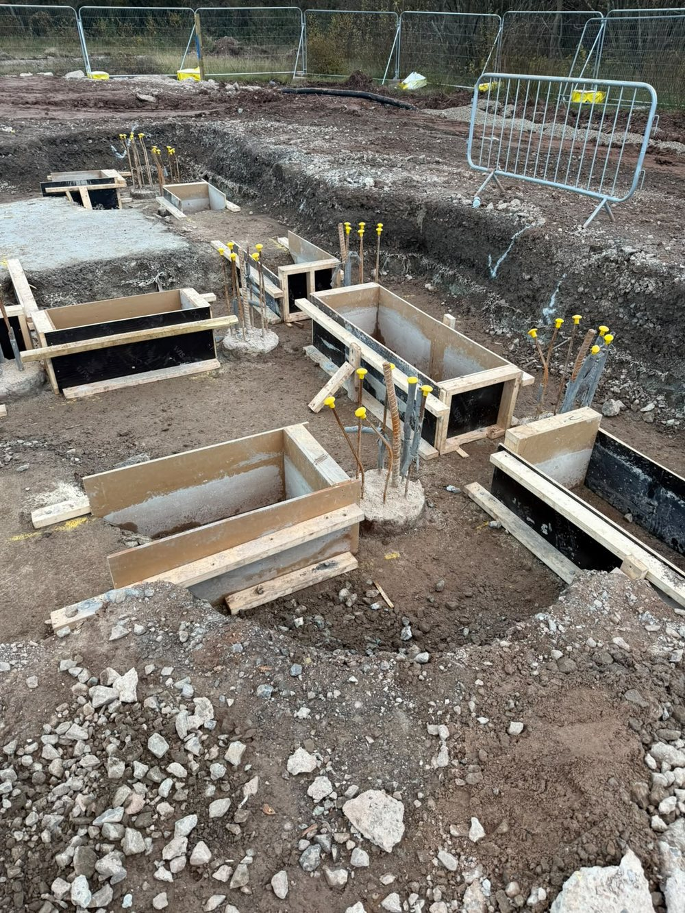
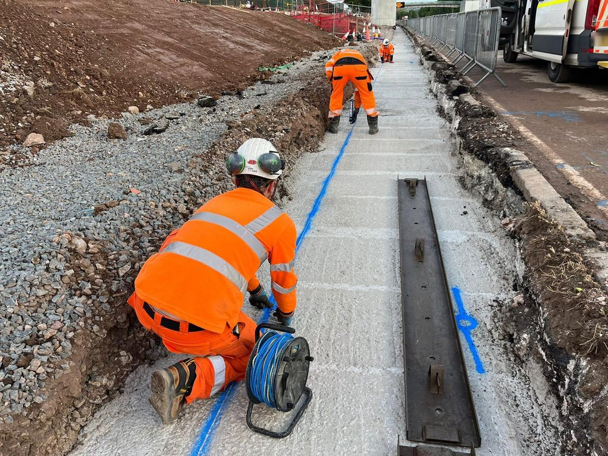

Site Engineering & Earthworks
Your build set out to the drawings, and your earthworks measured so quantities and machine models match the design.








What you get on site
Ryan sets out the lines and levels your trades build to, and measures the ground so you know what is being cut, filled and moved. Accurate setting out keeps foundations, steelwork and drainage where the design puts them. Reliable quantities help you plan plant and materials.
Site Engineering & Setting Out
Setting out on the ground for foundations, reinforced concrete, steelwork, roads, drainage and earthworks formation levels.
- Foundations, piling & reinforced concreteFoundations, footings and pile positions, plus pile caps, ground beams and reinforced concrete structures.
- Structural steelwork & holding-down boltsHolding-down bolt boxes and structural steelwork set accurately before concrete pours and steel erection.
- Roads, drainage & external worksRoads, kerbs, footpaths and external works, plus drainage, manholes, pipelines and utilities.
- Earthworks, temporary works & housingExcavations and formation levels, retaining walls, temporary works, housing plots and commercial builds.
Earthworks & Machine Control
Ground models, volume calculations and GPS machine control files built from surveyed site levels.
- Ground modelling & GPS machine control3D ground models and machine control design surfaces prepared for GPS-guided excavators and dozers.
- Cut & fill volume calculationsVolumes worked out by comparing existing or stripped ground with the design formation levels.
- Earthworks & stockpile surveysMeasured surveys of spoil heaps, aggregates and bulk excavation areas at each stage of the job.
- Isopachyte drawings & quantity checksColour-banded plans showing the depth of cut, fill or layer thickness across the site, plus quantity checks.
Quality Assurance & Monitoring
As-built checks, structural monitoring and precision surveys that keep site records clear and traceable.
- As-built verificationIndependent checks of foundations, structures, drainage, roads and completed site works.
- Structural monitoringRepeat precision measurements to track settlement or movement on structures and nearby assets.
- Precision dimensional & level surveysSlab, formation, steelwork, holding-down bolt and concrete checks against tolerance before follow-on trades start.
- Digital survey & quality assurance reportsClear as-built records, compliance documents and digital survey reports for handover.
See the full list (24)
Site Engineering & Setting Out
- Site engineering and construction setting out
- Foundations, footings and pile positioning
- Pile caps, ground beams and reinforced concrete structures
- Structural steelwork and holding-down bolt setting out
- Roads, kerbs, footpaths and external works
- Drainage, manholes, pipelines and utilities
- Earthworks, excavations and formation levels
- Retaining walls, embankments and batters
- Site engineering for temporary works
- Plot and parcel setting out for housing plots and residential developments
- Commercial and industrial construction
Earthworks & Machine Control
- Ground modelling and 3D design surfaces
- Machine control design models and GPS machine control files
- Volumetric calculations (cut and fill from measured levels)
- Volume calculations and isopachyte drawings
- Earthworks and stockpile surveys
- Isopachyte plans and thickness analysis
- Earthworks and material quantity verification
Quality Assurance & Monitoring
- As-built verification surveys and drawings
- Structural monitoring and movement checks
- Precision level and dimensional surveys
- Concrete foundation and structural checks
- Formation and finished level verification
- Digital survey reports and QA construction records
What to send Ryan
You don’t need all of this before getting in touch. Send what you have and Ryan will plan and price the job from there.
Not sure what you’ve got? Call 07956 996 424 and talk it through.
- The site address or postcodeWhere the job is.
- The drawingsSetting-out drawings or CAD files. PDF or DWG is fine.
- Design levels or the earthworks modelIf there is one. If not, Ryan can talk you through what is needed.
- What is being built, and whenWhich stage you are at and when the first setting out is needed.
- When you need it, and who to meet on siteRough dates are fine.
Discuss your setting out with Ryan
Call or email Ryan Johnston directly, or send an enquiry with this service already selected.
07956 996 424 ryan@rgcivilengineering.co.uk